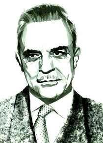

Milton ERICKSON
Milton Hyland Erickson (1901-1980), est un médecin américain surnommé "le thérapeute hors du commun". Il est atteint par la poliomyélite à l'âge de 17 ans et se retrouve dans une paralysie presque totale. Ses efforts pour se rééduquer et son sens accru de l'observation, le conduisent à découvrir sur lui-même certains effets de l'hypnose. Ainsi, à force de patience et d'entraînement, en focalisant son attention sur certaines zones de son corps et sur ses sensations, il parvient à stimuler ses muscles un à un et recouvre progressivement sa mobilité. Il se rétablit ainsi et entreprend ses études de médecine. Son travail sera dès lors basé sur une certitude, celle que chacun possède en lui les ressources nécessaires pour s'adapter à toute situation.
Médecin de formation et psychiatre, Milton H. Erickson découvre l’hypnose en suivant l’enseignement de Clark L. Hull. Mais très vite, il prend un chemin différent en développant une hypnose non autoritaire. Très loin de l'hypnose classique très directive, Milton H. Erickson utilise l’unicité de chaque individu pour donner des suggestions indirectes adaptées au client. Profitant des ressources importantes de l’inconscient du client, il en fait son allié pour provoquer le changement désiré consciemment par le client.
Il consacre sa vie au développement de nombreuses techniques de thérapie par l’hypnose orientée vers la solution. Il fait évoluer l’hypnose thérapeutique vers une hypnose non autoritaire qui s’adapte à chaque individu basée sur des métaphores et des suggestions indirectes ce qui fait la souplesse de cet art.
Médecin de formation et psychiatre, Milton H. Erickson découvre l’hypnose en suivant l’enseignement de Clark L. Hull. Mais très vite, il prend un chemin différent en développant une hypnose non autoritaire. Très loin de l'hypnose classique très directive, Milton H. Erickson utilise l’unicité de chaque individu pour donner des suggestions indirectes adaptées au client. Profitant des ressources importantes de l’inconscient du client, il en fait son allié pour provoquer le changement désiré consciemment par le client.
Il consacre sa vie au développement de nombreuses techniques de thérapie par l’hypnose orientée vers la solution. Il fait évoluer l’hypnose thérapeutique vers une hypnose non autoritaire qui s’adapte à chaque individu basée sur des métaphores et des suggestions indirectes ce qui fait la souplesse de cet art.
